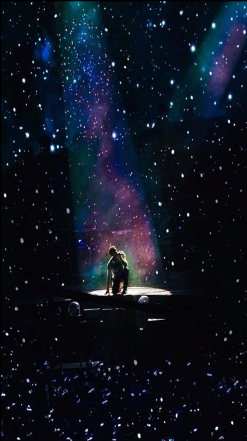

Coldplay
A Journey Within

Sobre a banda
Tudo começou em Londres, no final dos anos 1990, com quatro pessoas e um sonho que ainda não conhecia seus limites.
Ao longo dos anos, o Coldplay transformou sentimentos em música e momentos em memórias. Entre luzes, cores, sonhos e recomeços, suas canções atravessaram fronteiras e encontraram espaço na história de milhões de pessoas.
Mais do que uma banda, uma jornada sobre encontrar luz mesmo quando o caminho parece escuro.
Musica que transforma:
Esperança — Fix You
Lançada no álbum X&Y (2005), Fix You fala sobre estar ao lado de alguém em um momento difícil e tentar ajudá-lo a encontrar um caminho de volta para a luz. É uma música que combina muito com a ideia de acolhimento, esperança e reconstrução.
Transformação — Viva La Vida
Em Viva La Vida, presente no álbum Viva la Vida or Death and All His Friends (2008), aparece uma narrativa de mudança de perspectiva: alguém que já esteve no poder passa a olhar para a própria vida de outro lugar. A música pode representar mudança, queda, aprendizado e transformação.
Recomeço — Every Teardrop Is a Waterfall
Every Teardrop Is a Waterfall.Do álbum Mylo Xyloto (2011), a música transforma uma experiência aparentemente triste em algo positivo. A própria ideia de transformar lágrimas em uma “cachoeira” combina com a mensagem de encontrar beleza e força mesmo depois de momentos difíceis.
"Lights will guide you home."
Coldplay, Fix You
Curiosidades
- O vocalista Chris Martin e o guitarrista Jonny Buckland se conheceram na University College London.
- O primeiro álbum, Parachutes, foi lançado em 2000 e trouxe músicas como “Yellow” e “Trouble”.
- Os shows do Coldplay são famosos pela combinação de música, luzes, cores e interação com o público.
- Ao longo da carreira, a banda passou por diferentes fases visuais e musicais, explorando temas como amor, esperança, mudança e recomeço.
"If you never try,
you'll never know just what you're worth."
Coldplay, "Fix You"

Mais informações:
Você pode conhecer mais sobre a banda clicando aqui